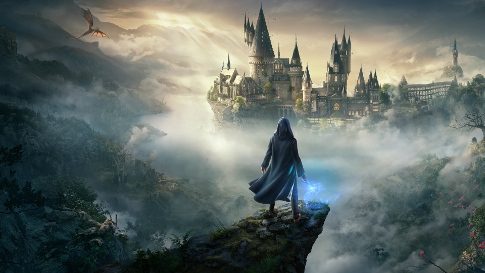
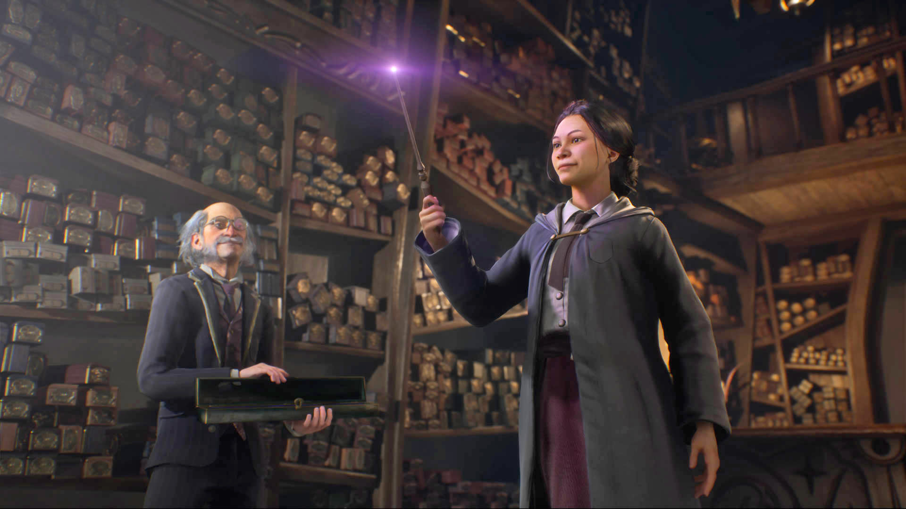

Hogwarts Legacy đã phá vỡ nhiều kỷ lục tại thời điểm ra mắt. Trước đó, game đối mặt với làn sóng tẩy chay từ cộng đồng LGBT.
Hogwarts Legacy, tựa game nhập vai lấy đề tài vũ trụ phù thủy Harry Potter đã gặp phải làn sóng phản đối gay gắt từ cộng đồng LGBT.
Bất chấp những tranh cãi và việc bị cộng đồng LGBT tẩy chay vì những phát ngôn được cho là kỳ thị người chuyển giới của tác giả J.K Rowling, Hogwarts Legacy, tựa game nhập vai lấy đề tài vũ trụ phù thủy Harry Potter đã gặt hái được nhiều thành công ban đầu.
Màn ra mắt “kỷ lục”
Theo số liệu từ SteamDB , tựa game nhập vai thế giới mở của Avalanche Software đã đạt 489.000 người chơi cùng lúc. Nhà phân tích Benji-Sales của VCG lưu ý rằng con số này đã giúp Hogwarts Legacy trở thành tựa game chơi đơn có đợt ra mắt hoành tráng thứ 2 trên Steam.
Hogwarts Legacy đã đẩy kỷ lục người chơi đồng thời của Fallout 4 là 472.962 xuống vị trí thứ 3, và hiện chỉ xếp sau Cyberpunk 2077. Mặc dù có màn ra mắt đầy sóng gió, bom tấn của CD Project Red vẫn đạt được số lượng người chơi đồng thời đáng kinh ngạc là 1.054.388.
Tuy vậy, kỷ lục của Cyberpunk 2077 được xác lập khi chính thức ra mắt vào tháng 12/2020, thành tích tương tự của Hogwarts Legacy được lập ra trong giai đoạn Early-Access (truy cập sớm).
Thời gian truy cập sớm diễn ra trước khi Hogwarts Legacy ra mắt chính thức vào ngày 10/2 và do đó con số trên chỉ tính những người chơi có đặt mua phiên bản Deluxe của game. Vì vậy, kỷ lục của Hogwarts Legacy còn có thể tăng lên khi phiên bản chính thức ra mắt.
Nhờ sự đầu tư và chuẩn bị tỉ mỉ, chuyên nghiệp từ phía nhà phát hành, tựa game cũng đạt được sự đón nhận tích cực của giới phê bình với 84/100 điểm trên Metacritic và 9/10 điểm trên Steam.
Ngoài ra, vào ngày 9/2, Hogwarts Legacy còn phá kỷ lục số lượng người xem cùng lúc trên nền tảng phát trực tuyến Twitch là 1,28 triệu người. Điều này đã khiến tựa game trở thành trò chơi một người chơi được xem nhiều nhất trên nền tảng này.
Không rõ hiện bao nhiêu người đã chơi tựa game này trên các nền tảng khác như Playstation 5 và Xbox Series X/S, tuy vậy, trò chơi đã đứng đầu cả 2 bảng xếp hạng doanh thu của các hệ máy này. Các chuyên gia nói với CNN rằng họ hy vọng trò chơi sẽ bán được ít nhất 10 triệu bản vào cuối tuần ra mắt.
Những thành tựu mà tựa game này đã và đang có đã phần nào chứng minh được sức nóng của bộ truyện Harry Potter.
Đối mặt với tranh cãi
Tính tới thời điểm hiện tại, Hogwarts Legacy vẫn tiếp tục gây nên nhiều cuộc tranh cãi gay gắt trên mạng xã hội. Nguyên nhân không liên quan đến bản thân trò chơi, mà xoay quanh tác giả bộ truyện Harry Potter là bà J.K Rowling.
Năm 2020, nhà văn này đã đăng tải một bài blog trên trang web riêng của mình “viết về lý do tại sao tôi lại đứng ra nói về các vấn đề tình dục và giới tính”. Bà Rowling nói rằng mình “đồng cảm với người chuyển giới”, nhưng đồng thời cũng ám chỉ rằng những người nam chuyển giới thành nữ là chỉ “khoác lên lớp vỏ phụ nữ”.
Khá nhiều quan điểm khác nhau trong bài viết của bà J.K. Rowling đã bị nhiều tổ chức và cá nhân chỉ trích một cách mạnh mẽ, nhưng cũng được nhiều người khác chấp nhận.
Cụ thể, một nghị viên Mỹ đã trích dẫn bài viết này khi bác bỏ một dự luật về bình đẳng giới. Gần đây nhất, hồi tháng 1 vừa qua, Vương Quốc Anh đã quyết định không thông qua dự luật Cải cách Công nhận Giới tính của Scotland sau khi dự luật này bị bà Rowling chỉ trích trong bài blog của mình.
Vì những vấn đề này, bà JK Rowling bị cộng đồng LGBT chỉ trích và xem là người cản trở việc họ được xã hội công nhận. Nhiều chiến dịch khác nhau đã được tổ chức để ngăn cản game thủ chơi Hogwarts Legacy.
Để xoa dịu dư luận, Giám đốc Sản xuất của Avalanche Software là ông Alan Trew gần đây đã đưa ra quan điểm của mình đối với sự phát triển của trò chơi và cộng đồng LGBT, đồng thời đưa một nhân vật chuyển giới vào Hogwarts Legacy.
“Chúng tôi biết những người yêu thích Thế giới phù thủy cũng bao gồm cộng đồng LGBT. Vì vậy, chúng tôi luôn muốn đảm bảo rằng khán giả, cũng như cộng đồng LGBT muốn trải nghiệm trò chơi này, sẽ cảm thấy được chào đón", ông Trew cho biết.